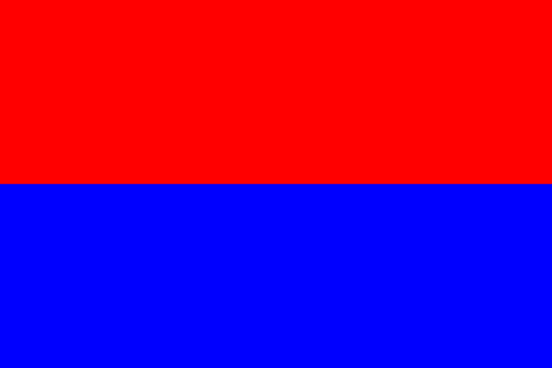

| Partido | Candidato | Encuesta #1 | Encuesta #2 |
|---|---|---|---|
|  | Carlos Alvarado Quesada | Primera Ronda | Segunda Ronda |
 |
Gerardo Fabricio Alvarado Muñoz | Primera Ronda | Segunda Ronda |
 |
Antonio Álvarez Desanti | Primera Ronda | Segunda Ronda |
 |
Edgardo Araya Sibaja | Primera Ronda | Segunda Ronda |
 |
Juan Diego Castro Fernández | Primera Ronda | Segunda Ronda |
 |
Otto Guevara Guth | Primera Ronda | Segunda Ronda |
| Rodolfo Hernández Gómez | Primera Ronda | Segunda Ronda | |
| Rodolfo Piza Rocafort | Primera Ronda | Segunda Ronda |